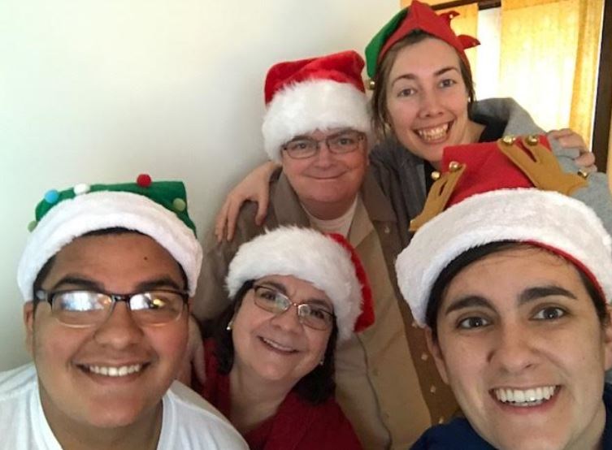
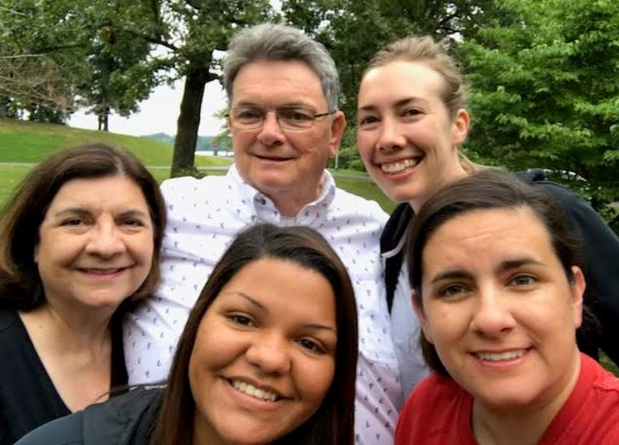

I moved from Indiana to St. Louis approximately 10 years ago, but very much love and appreciate my family, so throughout the years we’ve done what we can to make sure we stay in touch and keep the bonds of fun and friendship strong.
Chosen Family
When I moved to St. Louis 10 years ago, I didn’t really have any friends. I was just looking for an adventure. Trying to move away from home, but not too far from home. Too my great delight, after a few months, I started making friends. It’s wild to think about the fact that I remain friends with the same folks. Recently, a group of us went to New Orleans for our friend Kellys 40th birthday. Incredible time!

New Family
In addition to making a ton of friends in St. Louis, I also met my lady love. Above is me and my girlfriend, Tia. We’ve been together for almost 5 years. We own a home together and are thinking about getting married.

Christmas
Because I no longer live in St. Louis, me and my family do our best to stay in touch. During holidays, Tia and I will often go back to either Indiana or New York to visit with family or, every now and again, they come to us. Two years ago, my parents and nephew came to spend Christmas in St. Louis. It was a lovely time, got some quality time in with my nephew and enjoyed the holiday season with all.
Christmas in Cali
Sometimes our travels to stay in touch with family take us outside the Midwest! This past Christmas, we went out to San Fransisco, CA to visit my Uncle Carlos, Aunt Pam, and my cousins Stephanie and Mikala. While we were there, we were also able to catch a Warriors vs. Lakers Game. It was awesome!

Tegart Family Vacay
So far, I’ve mainly focused on my chosen family in St. Louis and my mom’s side of the family, but I love my dads side too! Every year, we try to get together for some family fun and bonding by renting cabins at a state park and hanging together for a few days. Here is a photo from last year when we went to Kentucky Dam State Park.